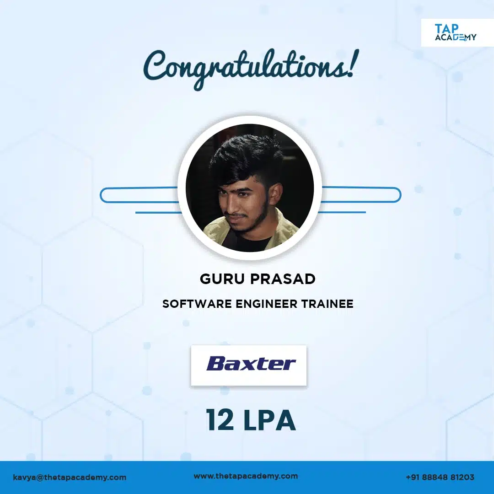
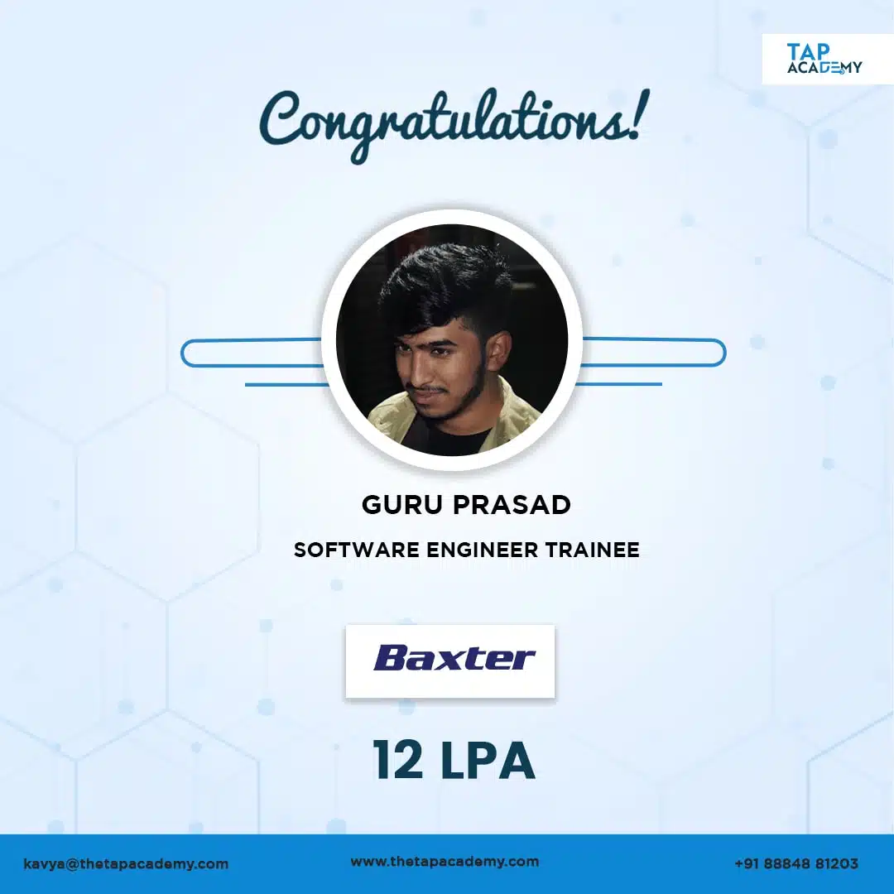

Home
Courses
student reviews
Blogs
Placements
Contact Us
Home
Courses
student reviews
Blogs
Placements
Contact Us
Our complete online training has made students learn to code anytime anywhere, enhance their coding skills & got placed in various Companies. Here are our few students placed at various companies :


 

Tap Academy presents Unlimited Job guarantee Placements for every student who enroll. More than 11,000+ students have got
exposure to AR Tech Training. Explore our Courses to know more


Explore our online courses designed by experts which offer students support, career counseling & Certification

A software engineer that is proficient in both front-end and back-end programming is known as a full-stack developer. They have experience dealing with a variety of web development technologies, such as HTML, CSS, JavaScript, databases, servers, APIs, and frameworks, among others. Let’s take the building of a Facebook-like social media platform as an example. The front-end and back-end of the application would be built by a full-stack developer focusing on this project. In order to generate the platform’s visual elements, the developer would design the user interface on the front end using tools like HTML, CSS, and JavaScript. Additionally, they would leverage front-end frameworks like React or Angular to speed up the development process. In order to manage the data and process requests, the developer would write the server-side code using tools like Node.js and PHP. To store user data and other data, they would also employ databases like MySQL or MongoDB. The integration of APIs (Application Programming Interfaces) for functions like authentication, messaging, and notifications would also fall within the purview of a complete stack developer. The full-stack developer may make sure that all parts are flawlessly linked and work together as an integrated unit by working on both the front-end and back-end of the social media platform. Because of the wide breadth of technical knowledge and problem-solving skills required, full-stack developers are in high demand in the software development sector.

Data Structures and Algorithms - Learning made fun with AR 4.5 (2567 Students) 4.5/5 Want to land a job at your dream IT company? If yes, then Data Structure and Algorithms are a pathway to your dream product-based companies. First, Tap Academy’s Data Structures and Algorithms course makes learning fun with augmented reality training. Second, this course provides practical training on the concepts. In addition, it offers instructor-led training and personal mentorship from experts. Furthermore, the course covers the solution to the problems asked by top tech companies.
Academy vision is to upskill technical graduates into software employees.
Get trained on Soft skills, Mock Interviews, Resume Building, LinkedIn Profile optimizing,
Email etiquette & much more
AR Based Learning Attend one of the kind Augmented Reality based live classed & solve Interview coding questions
Wholesome learning experience with 500 hours of Quality Training and 200+ hands on coding questions
 ;
;